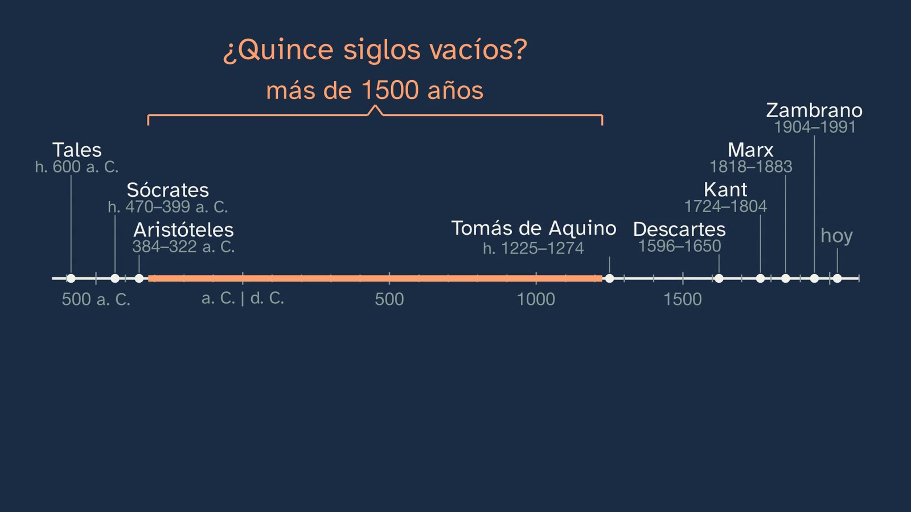
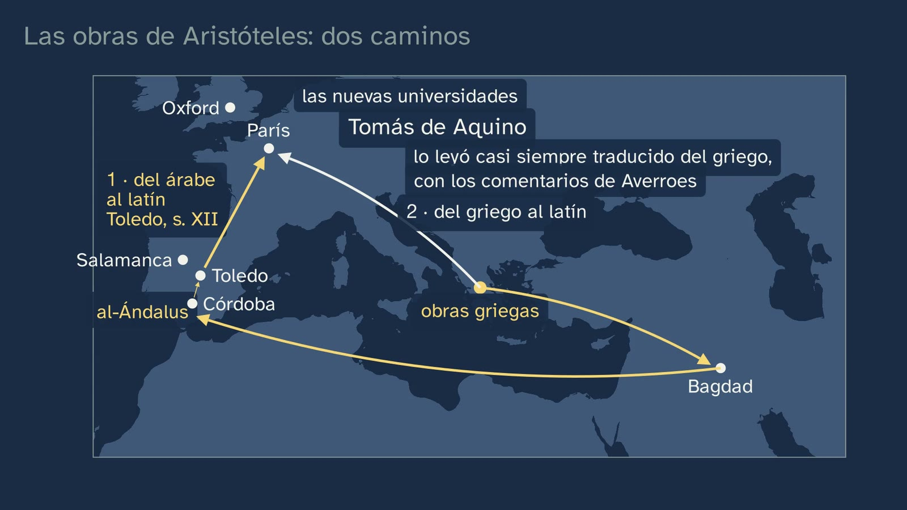

Veinticinco siglos de filosofía
En pocas palabras
La clase pone la filosofía en el tiempo. Empieza colocando en una línea del tiempo a escala, de Tales (hacia el 600 a. C.) a hoy, a los siete filósofos de la mesa de la clase 2: son más de veinticinco siglos. Y aparecen dos huecos. El primero salta a la vista: entre Aristóteles y Tomás de Aquino hay más de mil quinientos años, más de la mitad de la línea, vacía. El segundo se ve menos: seis hombres, una mujer, y los siete, europeos. La clase recorre la línea entera, época a época, con la pregunta que más movió a cada una, y va llenando los huecos:
- Cómo nació: en Mileto, de los mitos de Hesíodo a preguntar de qué está hecho todo (el arjé); y por qué allí, según la interpretación de Jean-Pierre Vernant: la polis, la plaza y las leyes a la vista de todos. Después, el error típico, desmontado: no fue un «milagro griego».
- La Antigüedad: de qué está hecho todo y, con Sócrates, cómo hay que vivir; las escuelas, y las primeras filósofas, en los márgenes: Lastenia, Axiotea e Hiparquia.
- Hipatia: lo que sabemos por su fuente más completa, y lo que se le añadió en 1908.
- La Edad Media: cómo encajan la fe y la razón, la pregunta de cristianos, musulmanes y judíos; los dos caminos por los que las obras de Aristóteles llegaron a la Europa latina; Hildegarda de Bingen y Christine de Pizan.
- La Modernidad: qué puedo saber con certeza; Descartes, Zhuangzi y la mariposa, la objeción de Isabel de Bohemia, sor Juana, Kant y Mary Wollstonecraft.
- La filosofía contemporánea: muchas preguntas a la vez, y muchas filósofas.
Cierra con por qué casi no aparecían las filósofas en la historia que se suele contar, con las otras tradiciones, cuyas líneas a veces se cruzan con la nuestra, y con la respuesta de la clase: cuatro épocas con su pregunta, un mapa que simplifica, y una conversación de más de veinticinco siglos que todavía sigue.
Objetivo. Al terminar, el alumnado sabrá situar en una línea del tiempo las grandes etapas de la filosofía occidental, con la pregunta que movió a cada una y con las mujeres que la historia dejó en los márgenes, y reconocer que otras tradiciones también filosofaron.
Es un vistazo para orientarse, no un curso de historia: el decreto quiere en 1.º «una visión básica y de conjunto» de la filosofía, y la historia se recorre despacio en 2.º, en Historia de la Filosofía. Para Castilla y León, esta ficha traza además las persecuciones de la filosofía, que pide su currículo.
Currículo
Real Decreto 243/2022, Filosofía (texto consolidado del BOE, comprobado el 09/10/2026; su última actualización, del 02/07/2026, no toca esta materia). Los saberes son del bloque A, «La filosofía y el ser humano», apartado 1, «La reflexión filosófica en torno a la propia filosofía».
| Elemento | Qué dice el decreto | Dónde se trabaja |
|---|---|---|
| Saber básico (bloque A.1) | «[…] Breve recensión histórica de la filosofía. […]» | Toda la clase: la línea a escala, las cuatro épocas con su pregunta y la conversación que sigue |
| Saber básico (bloque A.1) | «Métodos y herramientas básicos del filósofo: el uso y análisis crítico de fuentes; […]» | De los milesios no queda ningún libro entero: lo sabemos por otros. Hipatia, por su fuente más completa frente a lo que se le añadió en 1908. Y la herramienta de la clase 1: ¿quién la cuenta, cuándo y para qué? |
| Saber básico (bloque A.1) | «La discriminación social, de género, etnia y edad en la tradición filosófica.» | Las filósofas de los márgenes y por qué casi no aparecían (Cornaro, la Real Orden de 1910); Hiparquia, entre lo que se esperaba de una muchacha griega y lo que eligió ella; una línea occidental entre otras. A fondo, en la clase 6 |
| Competencia específica 2 | «Buscar, gestionar, interpretar, producir y transmitir correctamente información relativa a cuestiones filosóficas a partir del empleo contrastado y seguro de fuentes, el uso y análisis riguroso de las mismas, y el empleo de procedimientos elementales de investigación y comunicación […]» | Hipatia y Hubbard, examinados como fuentes; el ejercicio 3; la actividad |
| Competencia específica 5 | «Reconocer el carácter plural de las concepciones, ideas y argumentos en torno a cada uno de los problemas fundamentales de la filosofía, mediante el análisis crítico de diversas tesis relevantes con respecto a los mismos, para generar una concepción compleja y no dogmática de dichas cuestiones e ideas […]» | Vernant y quien lo matiza; la época axial, como hipótesis discutida; la fórmula «del mito al logos», bien entendida |
| Competencia específica 6 | «Comprender las principales ideas y teorías filosóficas de los más importantes pensadores y pensadoras, mediante el examen crítico y dialéctico de las mismas y de los problemas fundamentales a los que estas responden […]» | Cada época, con su pregunta, sus autores y sus autoras, y lo que dijo cada uno con sus palabras |
| Criterio 2.1 | «Demostrar un conocimiento práctico de los procedimientos elementales de la investigación filosófica a través de tareas como la identificación de fuentes fiables, la búsqueda eficiente y segura de información y la correcta organización, análisis, interpretación, evaluación, producción y comunicación de esta […]» | ¿De dónde sale la frase de Hipatia? (11:32); el ejercicio 3 («en una fuente fiable»); la actividad de las cinco fuentes |
| Criterio 3.3 | «Reconocer la importancia de la cooperación, el compromiso con la verdad, el respeto a la pluralidad y el rechazo de toda actitud discriminatoria o arbitraria, aplicando dichos principios a la práctica argumentativa y al diálogo con los demás.» | Teodoro, que no rebate el razonamiento de Hiparquia y le recuerda el sitio que, según él, le tocaba a una mujer; las universidades cerradas; la pregunta abierta: ¿a quién dejamos hoy en los márgenes? |
| Criterio 5.2 | «Comprender y exponer distintas tesis y teorías filosóficas como momentos de un proceso dinámico y siempre abierto de reflexión y diálogo, a través del análisis comparativo de los argumentos, principios, metodologías y enfoques de dichas tesis y teorías.» | Los milesios, que no repiten al maestro; la conversación: Tomás con Aristóteles, Descartes con la filosofía que se enseñaba en las escuelas de su tiempo, Isabel con Descartes |
| Criterio 6.1 | «Tomar consciencia de la riqueza e influencia del pensamiento filosófico identificando y analizando las principales ideas y teorías filosóficas en textos o documentos pertenecientes a ámbitos culturales diversos […]» | Confucio, Buda y Zhuangzi; Al-Kindi, Avicena, Averroes y Maimónides; Bagdad, Córdoba y Toledo: las líneas que se cruzan |
| Criterio 6.2 | «Adquirir y demostrar un conocimiento significativo de las ideas y teorías filosóficas de algunos de los más importantes pensadores y pensadoras de la historia […]» | Los autores y las autoras de cada época, con sus fechas y sus palabras; el ejercicio 3 |
Un detalle de lectura: en el decreto, «Breve recensión histórica de la filosofía» comparte viñeta con las características del saber filosófico, sus divisiones y su utilidad. Esta clase trabaja sólo la recensión; lo demás está en las clases 1, 2, 4 y 7 del tema.
La profundidad de 1.º. Los saberes de la materia buscan «dotar al alumnado de una visión básica y de conjunto del rico y complejo campo de estudio que comprende la filosofía», y en cada caso «se podrá profundizar en unos más que en otros» (introducción de la materia). Por eso la clase es un mapa para orientarse. El decreto pide además reparar «la marginación y el ocultamiento histórico de la mujer, o los prejuicios culturales de carácter etnocéntrico, racista o antropocéntrico» que «han podido lastrar hasta épocas recientes el desarrollo de la disciplina» (introducción): de ahí la banda de los márgenes y las otras tradiciones. La historia se recorre despacio en 2.º, en Historia de la Filosofía, con sus saberes en tres bloques, no en cuatro épocas: el origen en la antigüedad griega; la modernidad europea desde sus raíces medievales; y del pensamiento moderno a «nuestros días» (introducción de esa materia). Su competencia 3 pide reconocer «el papel, a menudo oculto y marginado, de las mujeres, así como la importancia e influencia de otras tradiciones de pensamiento diferentes a la nuestra». Esta clase lo siembra.
Lo que hay que traer. De las clases 1 y 2: los cuatro rasgos de la filosofía (crítica, radical, racional y de conjunto), Tales y la herramienta «¿quién la cuenta, cuándo y para qué?», Sócrates y la vida examinada, los siete de la mesa con su respuesta y la ventana fuera de Europa (Confucio, Buda y Al-Kindi). De la ESO, Geografía e Historia de 1.º y 2.º (Real Decreto 217/2022): «Tiempo histórico: construcción e interpretación de líneas de tiempo a través de la linealidad, cronología, simultaneidad y duración»; «Las personas invisibilizadas de la historia: mujeres, esclavos y extranjeros»; y «La influencia de las civilizaciones judía e islámica en la cultura europea».
Lo que añaden las comunidades (sólo contraste, leído en sus boletines):
| Comunidad y norma | Qué añade | Dónde lo da la clase |
|---|---|---|
| Andalucía · Orden de 30 de mayo de 2023, BOJA núm. 104, 02/06/2023 | «Las circunstancias de aparición de la Filosofía: el paso del mito al logos», en la misma viñeta que la breve recensión histórica | «Cómo nació la filosofía» (3:28) y «¿Un milagro griego?» (5:56): primero cómo nació, después la fórmula con su uso honrado, «un paso lento, que no borró el mito» |
| Madrid · Decreto 64/2022, BOCM núm. 176, 26/07/2022 | «Las circunstancias de aparición de la filosofía: el paso del mito al logos. Breve recensión histórica de la filosofía» | Lo mismo |
| Castilla y León · Decreto 40/2022, BOCYL núm. 190, 30/09/2022, p. 49838 | «El origen cívico de la filosofía: el debate filosófico como precursor de la cultura crítica. Las persecuciones de la filosofía», también junto a la breve recensión histórica | El origen cívico, con Vernant (5:10): la plaza, las leyes a la vista, ganar convenciendo con razones, y quien lo matiza. Las persecuciones, en el apartado siguiente |
| Galicia · Decreto 157/2022 | «Breve síntese das grandes épocas históricas»; «Filosofía e eurocentrismo» | Las cuatro épocas; las otras tradiciones (20:34) |
| Cataluña · Decret 171/2022 | Una tradición «androcèntrica i etnocèntrica» (competencia 4) | Los márgenes y las otras líneas |
| Comunitat Valenciana · Decreto 108/2022 | «etnocentrismo, relativismo cultural y decolonización»; «Feminismo, feminismos y perspectiva de género en la filosofía»; las ideas «silenciadas, relegadas u ocultadas» (CE7) | Los márgenes (19:20) y las otras líneas |
Dónde lo traen los libros. De los doce proyectos editoriales que contrastamos con su unidad 1 a la vista, diez traen una breve historia de la filosofía y nueve, el nacimiento de la filosofía con el paso del mito al logos. Las mujeres aparecen en líneas del tiempo (Santillana, McGraw Hill y Casals «Radix»), en un margen (Casals, 2022) o con una autora (Aspasia en Vicens Vives; Beauvoir en Editex); las otras tradiciones y el eurocentrismo, en SM, Santillana y Radix, y en Oxford por el título de un epígrafe.
Las persecuciones de la filosofía, para Castilla y León
El currículo de Castilla y León pone «Las persecuciones de la filosofía» en el mismo saber que la breve recensión histórica; el decreto estatal no lo pide, y ninguno de los doce libros contrastados lo trae. La clase no le da un apartado: una lista rápida de perseguidos exigiría comprobar cada caso, y sería meterla deprisa. El tema cuenta dos casos, cada uno con su fuente, y los dos sirven para preguntar si de verdad se persiguió a la filosofía o a otra cosa.
| Caso | Dónde está en el vídeo | Qué dicen las fuentes | ¿Por filosofar? |
|---|---|---|---|
| Sócrates, condenado a muerte en Atenas en el 399 a. C. | Clase 1, capítulo «Qué hace la filosofía»: «en su juicio, cuando ya lo habían declarado culpable», dijo que una vida sin examen no merece la pena vivirla (Apología 38a). Clase 2, capítulo «Sócrates: examinar la vida»: el tábano de la ciudad (Apología 30e), dicho en el mismo juicio | La acusación: no reconocer a los dioses de la ciudad, introducir otras divinidades nuevas y corromper a los jóvenes; la pena pedida, la muerte. La copia Diógenes Laercio (II 40), que dice, citando a Favorino, que el acta aún se conservaba; la misma acusación, en Platón (Apología 24b–c). Lo condenaron y bebió la cicuta (Diógenes Laercio II 42) | En el relato de Platón, el propio Sócrates dice que de su manera de examinar a los demás le nacieron «muchas enemistades», y de ellas «muchas calumnias» (Apología 22e–23a). La acusación formal habla de dioses y de jóvenes, no de filosofía. Buena pregunta para el aula: ¿condenaron al filósofo, o lo que hacía? |
| Hipatia, asesinada en Alejandría en marzo de 415 | Esta clase, capítulo «Hipatia: lo que sabemos y lo que se cuenta» (10:17; la muerte, en 10:59) | Su fuente más completa, Sócrates de Constantinopla (Historia eclesiástica VII 15; su obra llega al año 439): el prefecto Orestes y el obispo Cirilo se disputaban el poder; como ella trataba a menudo con Orestes, corrió la calumnia de que impedía que se reconciliaran; unos exaltados, encabezados por un tal Pedro, lector, la asesinaron; y el historiador, cristiano, lo condena | No, según su fuente: una lucha política y una calumnia, no su filosofía. Otras fuentes, más tardías o de un bando, dan otras causas: la actividad de esta ficha las pone frente a frente |
| El 529, para ampliar | No sale en el vídeo | Según el cronista Juan Malalas, la única fuente directa, el emperador Justiniano envió a Atenas una orden para que nadie enseñara filosofía (Cronografía XVIII 47). Poco después, cuenta Agatías (Historias II 30), siete filósofos, con Damascio, se fueron a Persia, porque no les agradaba la creencia dominante y las leyes les impedían vivir allí con seguridad; Agatías no lo relaciona expresamente con la orden. Volvieron con la paz de 532 entre romanos y persas (Agatías II 30–31, según Watts, 2005) | Es lo más parecido a una prohibición de enseñar filosofía, con dos cautelas: no fue «el cierre de la Academia de Platón», sino de una escuela neoplatónica que se decía su heredera; y la filosofía siguió, por ejemplo en Alejandría, donde Olimpiodoro enseñó hasta los años 560 (Watts, 2004 y 2005) |
Para trabajarlo, dos preguntas con las fuentes delante: ¿condenaron a Sócrates por filosofar?, ¿mataron a Hipatia por ser filósofa? La actividad de esta ficha hace la segunda. Las dos enlazan con el otro añadido de ese mismo saber, «el origen cívico de la filosofía», que la clase da con Vernant (5:10).

Cómo está construida la clase
Capítulos del vídeo
Unos veintidós minutos, en trece capítulos. El hilo es la línea del tiempo a escala, porque el hueco de quince siglos tiene que verse tal cual, no contarse: entre la muerte de Aristóteles (322 a. C.) y el nacimiento de Tomás (hacia 1225) hay 1546 años, el 59 % de los 2610 que van de Tales a hoy. Encima van los filósofos; debajo, en una banda gris rotulada «los márgenes», las filósofas, que al final suben a la línea. El decreto pide una enseñanza «en buena medida dialógica», que no sea «una mera exposición programática de temas y cuestiones» (introducción de la materia): por eso la clase no recita una lista de autores, sino que plantea un problema (los huecos) y lo resuelve época a época.
| Capítulo | Qué pasa | Por qué así |
|---|---|---|
| Qué vamos a ver (0:00) | Javier saluda; el mapa del tema, el mismo de las clases 1 y 2, con la de hoy resaltada. Gancho: «en la historia que se suele contar hay huecos enormes. ¿Qué se esconde en ellos?» | Saber dónde se está y crear la expectativa de los huecos. |
| Las soluciones de la clase anterior (0:29) | Las tres, en corto: Aristóteles y Marx; las cuatro piezas de la octava silla; y una respuesta de casa a la que le falta ser racional. | Práctica espaciada, sin alargarla. |
| Siete filósofos en una línea (1:32) | Recuperar: ordenar a los siete de la mesa. La línea, de Tales a hoy. Predicción: ¿dónde estarán los huecos? Los siete, en su sitio; el hueco de más de mil quinientos años, y el otro: seis hombres y una mujer, todos europeos. Las cuatro franjas de las épocas, con su nombre (la Antigüedad, la Edad Media, la Modernidad y la época contemporánea), y la banda de los márgenes. | Lo que el alumno ya sabe, colocado a escala, plantea la pregunta de la clase sin enunciarla. |
| Cómo nació la filosofía (3:28) | Mileto, hacia el 600 a. C. El mito: Hesíodo, hacia el 700 a. C., cuenta que primero surgió el Caos, un abismo, y después la Tierra (Teogonía 116–117). El cambio de pregunta: de qué está hecho todo, el arjé. Tales, el agua; Anaximandro, lo indefinido; Anaxímenes, el aire: no repiten al maestro, y ese es el rasgo crítico. ¿Cómo lo sabemos? Por otros, como Aristóteles. Para y piensa: ¿por qué en una ciudad griega? La respuesta de Vernant y su matiz. | Primero se cuenta lo que se cuenta: si la clase sólo lo criticara, nadie sabría qué se critica. Es lo que piden Andalucía, Madrid y Castilla y León. |
| ¿Un milagro griego? (5:56) | El error típico y la fórmula «del mito al logos». Tres cosas: el mito no desapareció de golpe; no pasó sólo en Grecia (Confucio, Buda; la época axial de Jaspers, una hipótesis discutida); y no salió de la nada: los propios griegos decían que las matemáticas nacieron en Egipto, donde a los sacerdotes se les permitía tener tiempo libre (Aristóteles, Metafísica I 1), y la tradición cuenta que Tales aprendió allí geometría. Conclusión: un cambio, poco a poco, con sus causas; la fórmula sirve si se entiende como un paso lento que no borró el mito. | El error, con lo que tiene de verdad («algo cambió»), desmontado con tres razones de la filosofía y de la historia, cada una con su fuente. |
| La Antigüedad (7:52) | Dos preguntas: de qué está hecho todo y, con Sócrates, cómo hay que vivir (República I 352d). La Academia y el Liceo; Lastenia y Axiotea (Diógenes Laercio III 46). Las escuelas de Epicuro y de Zenón de Citio, epicúreos y estoicos: cómo vivir para ser feliz (Epicteto, Enquiridión 1). Y en tiempos de Epicuro, entre los cínicos, Hiparquia: lo que se esperaba de una muchacha griega (que su padre la casara; su sitio, la casa y el telar) y lo que eligió ella (a Crates, contra el ruego de sus padres; su mismo manto; los banquetes, adonde en Atenas no iban las mujeres casadas). En un banquete, Teodoro no rebate su razonamiento: quiere humillarla levantándole el manto y le echa en cara el telar, y ella responde «sobre mí misma» (Diógenes Laercio VI 96–98). Y la pregunta, sin veredicto: ¿fue libre, o sólo pudo vivir así al lado de un filósofo? Todo, junto a un fresco romano de la Villa Farnesina que suele identificarse con Crates e Hiparquia, y que la pizarra presenta como imaginado. | Cada época con su pregunta, y sus filósofas, a la vista, en la banda de los márgenes. De Hiparquia, no sólo la anécdota: el papel que le tocaba, el que eligió y el debate. |
| Hipatia: lo que sabemos y lo que se cuenta (10:17) | Alejandría, hacia el 400 d. C.: ningún libro suyo. Lo que cuenta su fuente más completa, Sócrates de Constantinopla, unos veinticinco años después: enseñaba a quien quisiera oírla, y la mataron en marzo de 415 en una lucha de poder, a raíz de una calumnia; el historiador, cristiano, lo condena. Lo que se le añadió: la frase que circula, examinada con la herramienta de la clase 1 (la pizarra enseña la página del librito de 1908 y subraya «said Theon to Hypatia»: la dice su padre, Teón), y el retrato, imaginado, del mismo librito. Y Agustín, en un diálogo con la Razón que escribió años antes, en Italia: «deseo conocer a Dios y el alma». | El «¿cómo lo sabemos?» con una filósofa del hueco. Dar la causa que da la fuente evita que la leyenda llene el hueco. |
| La Edad Media y las obras de Aristóteles (12:57) | Hacia el 500; la pregunta: cómo encajan la fe y la razón. Predicción: ¿cómo llegó el resto de Aristóteles a la Europa latina? Dos caminos, en un mapa que llega hasta Persia: por Bagdad (con Al-Kindi; y Avicena, en Persia), al-Ándalus y Toledo, del griego al árabe y del árabe al latín; y directamente del griego al latín. Tomás lo leyó casi siempre traducido del griego, con los comentarios de Averroes. Para y piensa: ¿por qué la misma pregunta en tres religiones? Hildegarda y Christine de Pizan. El hueco, lleno. Javier, a cámara (15:50): no hubo quince siglos vacíos. | Una predicción con respuesta en un mapa, y coherente con la clase 2, que desmontó «Tomás conoció a Aristóteles por los árabes». |
| La Modernidad (15:56) | Desde el siglo XVI todo se tambalea (Copérnico, las guerras de religión, la imprenta que llena Europa de libros): ¿qué puedo saber con certeza? Descartes y su duda (1637); Zhuangzi y la mariposa; la objeción de Isabel de Bohemia (1643), con su razón; sor Juana (1691); la Ilustración: Kant (1784), con el lema de Horacio, y Wollstonecraft (1792), con su retrato. | La pregunta de la época, con su contexto y con una objeción: la conversación se ve en directo. |
| La filosofía contemporánea (18:19) | Desde el siglo XIX, muchas preguntas a la vez: la sociedad (Marx), el lenguaje (Wittgenstein) y lo que somos (Beauvoir); las filósofas del siglo XX y el dilema del tranvía, contado como lo planteó Philippa Foot (1967): un tranvía sin frenos va hacia cinco personas, y el conductor sólo puede desviarlo a otra vía, donde hay una. | En corto: la cuarta época no tiene una sola pregunta, y así se dice. |
| Las voces de los márgenes (19:20) | Para y piensa: ¿por qué casi no aparecían las filósofas? Las universidades cerradas (Elena Cornaro, Padua, 1678; España, Real Orden de 1910), obras sin firmar o perdidas, quién decide a quién se cita; lo que pide el decreto. Las otras tradiciones, en líneas que se cruzan. | Los porqués, con documentos, no sólo con nombres. |
| La línea entera (20:58) | Las cuatro épocas con su pregunta; una simplificación y una convención; una conversación que todavía sigue: Tomás con Aristóteles, Descartes con la filosofía que se enseñaba en las escuelas de su tiempo, heredera de la Edad Media, e Isabel con Descartes. | La respuesta a la pregunta de la clase, con su aviso: un mapa no es el territorio. |
| Para practicar y seguir pensando (21:59) | Tres ejercicios, la pregunta abierta y la próxima clase, las ramas. Javier: «la filosofía es una conversación de más de veinticinco siglos, con más voces de las que nos contaron». | Las soluciones abren la clase 4. |
La clase nombra a diecisiete filósofas y a veinticinco filósofos. De cuatro de ellas, Lastenia, Axiotea, Hiparquia e Hipatia, no se conserva ninguna obra: lo que sabemos es un testimonio, y la clase lo presenta así («lo que sabemos nos lo cuentan otros»).

Plan de una sesión de 50 minutos
| Minutos | Qué se hace |
|---|---|
| 0–3 | Sin vídeo: «Antes de empezar», en la hoja. Las filósofas que conocen y qué creen que pasó entre Aristóteles y Tomás de Aquino. |
| 3–13 | Vídeo de 0:00 a 7:52, hasta el final de «¿Un milagro griego?». Parar en 2:12 (¿dónde estarán los huecos?) y en 5:05 (¿por qué en una ciudad griega?): un minuto en parejas cada vez, antes de seguir. |
| 13–18 | Vídeo de 7:52 a 12:04: la Antigüedad, Hipatia y Agustín. Parar en 11:02: ¿de dónde sale la frase? |
| 18–35 | La actividad: ¿por qué mataron a Hipatia? Cinco fuentes. |
| 35–47 | Vídeo de 12:57 al final (23:29). Parar en 19:32 (¿por qué casi no aparecían las filósofas?) y enlazarlo con la actividad: ¿quién contaba la historia de Hipatia, y la de las demás? |
| 47–50 | «Al final de la clase», en la hoja: releer las dos respuestas del principio. Los ejercicios, para casa. En Castilla y León, la pregunta de Sócrates (arriba) puede cerrar la sesión o abrir la siguiente. |
Errores típicos y cómo se tratan
Son confusiones frecuentes que el diseño prevé; no hay, que sepamos, una investigación didáctica tan sólida sobre ellas como la de las ciencias.
- «La filosofía nació de golpe en Grecia, cuando la razón sustituyó al mito: un milagro griego.» Es el error de la clase (5:56). Tiene algo de verdad: algo cambió en Mileto, de contar qué dios nació de cuál a buscar en la naturaleza el principio de todo. Pero el mito no desapareció de golpe: según Aristóteles, Tales pensaba que «todo está lleno de dioses» (Acerca del alma I 5, 411a7–8), y Platón cuenta mitos y hasta avisa, en el Gorgias, de que su interlocutor tomará por mito lo que él tiene por logos (523a). No pasó sólo en Grecia: Confucio, Buda y la «época axial» de Jaspers (1949), una hipótesis que un estudio con datos de muchas sociedades debilita, porque encuentra esos rasgos siglos o milenios antes y en otros lugares (Mullins y otros, 2018). Y no salió de la nada: los propios griegos decían que las matemáticas nacieron primero en Egipto, porque «allí a la casta de los sacerdotes se le permitía tener tiempo libre» (Aristóteles, Metafísica I 1, 981b 23–25), y la tradición, tardía, cuenta que Tales aprendió geometría de los egipcios (Diógenes Laercio I 24 y 27; Proclo). El propio Vernant lo dijo en 1957: aquellas novedades «no constituyen un milagro»; «no hay inmaculada concepción de la Razón» (p. 205). A quien tiene que enseñar «el paso del mito al logos» (Andalucía y Madrid), la clase le da su uso honrado: un paso lento, que no borró el mito.
- «La Edad Media fue un tiempo oscuro: mil años sin filosofía.» La línea de los siete lo sugiere, y la clase lo pregunta en voz alta (2:46: «¿nadie pensó nada en quince siglos?») para responderlo con nombres (15:40): Epicuro, Epicteto, Hipatia, Agustín, Al-Kindi, Avicena, Averroes, Maimónides, Hildegarda… En griego, en latín, en árabe y en hebreo: Marenbon distingue cuatro ramas de la filosofía medieval, la griega, la latina, la árabe y la judía. El hueco era de la historia que se suele contar, no de la filosofía.
- «Tomás de Aquino conoció a Aristóteles gracias a los árabes.» La clase 2 ya lo desmontó, y esta lo enseña en un mapa (14:13). Hubo dos caminos. Uno, por Bagdad (siglos VIII–X, al árabe, a veces pasando antes por el siriaco), al-Ándalus y Toledo (siglo XII, del árabe al latín). El otro, directo del griego al latín: Jacobo de Venecia, en el siglo XII, y Guillermo de Moerbeke, contemporáneo de Tomás, con manuscritos del mundo bizantino. Tomás leyó a Aristóteles casi siempre en esas traducciones del griego y usó los comentarios de Averroes, al que llamaba «el Comentador». Para la Metafísica empezó usando también la versión árabe-latina, y desde mediados de 1271 la de Moerbeke (Borgo, 2024). Dos leyendas vecinas: que Tomás le encargara las traducciones a Moerbeke («muy probablemente, nada más que una leyenda nacida de la hagiografía», según Minio-Paluello), y que en Toledo hubiera una «Escuela de Traductores»: el nombre es de 1819, y no hubo tal institución, sino traductores, a veces con un mecenas (Santoyo, 2011).
- «A Hipatia la mataron por ser científica», o por ser mujer, o por pagana. Su fuente más completa da otra causa (10:59): una lucha de poder entre el prefecto Orestes y el obispo Cirilo, y la calumnia de que ella impedía que se reconciliaran. No habla de ciencia ni de su religión, no dice que los asesinos fueran monjes, y el autor, cristiano, condena el crimen. Lo más parecido en una fuente antigua a «la mataron por su saber» está en la Suda, que lo mezcla con la envidia y con la violencia de los alejandrinos («según unos… según otros»). La «mártir de la ciencia» la construyeron después: el panfleto de John Toland (1720) contra el clero de Alejandría, o Gibbon (1788), que tradujo las óstraka del griego por «conchas de ostra», cuando lo más probable es que fueran tejas o cascotes, y añadió de su cosecha unos miembros «aún palpitantes». Y cuando la mataron no era una joven: un cronista del siglo VI, Juan Malalas, la llama «mujer anciana», y Dzielska calcula que tenía unos sesenta años. Cuidado también con algunas enciclopedias en línea (véase «Recursos abiertos»).
- «Defiende tu derecho a pensar…» es una frase de Hipatia, y su retrato es ese. La clase lo examina con la herramienta de la clase 1 (11:32): la frase sale de un folleto biográfico, casi todo inventado, del estadounidense Elbert Hubbard (1908, pp. 82–83), y allí no la dice ella, sino su padre, Teón; la pizarra enseña la página y subraya «said Theon to Hypatia». El retrato que circula es un dibujo de Jules Maurice Gaspard para ese mismo folleto: imaginado. De Hipatia no se conserva ninguna obra con su nombre.
- «Las mujeres no filosofaban», o «no hubo filósofas hasta el siglo XX». La clase lo trata de frente (19:20): en todas las épocas hubo filósofas, y casi no aparecían porque las universidades les cerraron la puerta (en Oxford, hasta 1920; en Cambridge, del todo, hasta 1948), porque algunas escribieron sin firmar (Harriet Taylor Mill, en 1851), porque la obra de otras se perdió y porque la historia la cuentan quienes deciden a quién se cita. Y el error contrario, que también conviene evitar: hacerlas lo que no fueron. No conviene presentar a Elena Cornaro como feminista: el Dizionario Biografico degli Italiani advierte contra esa lectura y cita lo que escribió ella, que «el adorno que hace graciosas a las mujeres, y famosísimas en todas partes, es el silencio» (Opera, p. 184). Y de Lastenia, Axiotea, Hiparquia e Hipatia tenemos un testimonio, no una obra.
- «Cada época tuvo una pregunta y empezó en una fecha exacta.» La clase avisa (21:20): es una simplificación, y dónde empieza cada época es una convención. Marenbon recuerda que el 1500 es una cifra redonda cerca de 1492 y de 1517, y que muchos medievalistas ya no ponen ahí una frontera. El currículo de 2.º reparte la historia en tres bloques, no en cuatro. Y el 529, que se suele dar como «el cierre de la Academia de Platón» y el final de la filosofía antigua, no fue ni lo uno ni lo otro (véase el apartado de Castilla y León).
- Citas que cambian de dueño o de forma. «Cogito, ergo sum» no está en el Discurso del método, que se publicó en francés en 1637 («je pense, donc je suis»); la fórmula latina aparece en los Principia philosophiae (1644, I, 7). Sapere aude no es de Kant, sino de Horacio (Epístolas I 2, 40), donde quiere decir «atrévete a ser sabio» o sensato: Kant lo hizo lema de la Ilustración en 1784 (la clase lo dice, 18:00). Y el dilema del tranvía con alguien junto a la palanca es una variante de Judith Jarvis Thomson (1985): en el caso de Philippa Foot (1967) decide el conductor. La clase lo cuenta y lo dibuja como lo planteó Foot (18:58): un tranvía sin frenos (en su texto, un «runaway tram», un tranvía desbocado) va hacia cinco personas, y el conductor sólo puede desviarlo a otra vía, donde hay una.

Preguntas y soluciones
Dentro del vídeo
- ¿Recuerdas a los siete de la mesa? Ordénalos, del más antiguo al más reciente (1:32; la pausa, en 1:45). Sócrates (hacia 470–399 a. C.), Aristóteles (384–322 a. C.), Tomás de Aquino (hacia 1225–1274), Descartes (1596–1650), Kant (1724–1804), Marx (1818–1883) y María Zambrano (1904–1991).
- Predice: ¿dónde estarán los huecos más grandes? (2:05; la pausa, en 2:12). Vale cualquier respuesta razonada. El gran hueco está entre Aristóteles y Tomás: 1546 años, el 59 % de la línea. Merece la pena valorar a quien vea el otro hueco, el que no es de fechas: seis hombres y una mujer, todos europeos.
- Para y piensa: Egipto y Babilonia llevaban siglos estudiando el cielo y los números; ¿por qué crees que este cambio empezó en una ciudad griega? (4:51; la pausa, en 5:05). Valen las respuestas razonadas, y lo que se vea después es una interpretación, no la solución. La de Vernant: en la polis, los asuntos de todos se debatían en público, en el ágora; las leyes se pusieron por escrito, a la vista de todos; en la asamblea ganaba quien mejor convencía con razones; y también los saberes sobre el mundo salieron a la plaza. Quien la matiza: la Mileto de Tales tuvo tiranos y luchas entre bandos (Heródoto I 20; V 28–29; Sassi, 2007). Si alguien contesta «porque los griegos eran más listos», es justo el error del capítulo siguiente: el milagro.
- ¿De dónde sale la frase de Hipatia que circula por internet? Usa la herramienta de la primera clase: quién la cuenta, cuándo y para qué (11:32; la pausa, en 11:56). Quién la cuenta: Elbert Hubbard. Cuándo: en 1908, casi quince siglos después. Para qué: en un folleto novelado, donde se la pone en boca de su padre, Teón, justo después de que diga que «todas las religiones dogmáticas y formales son falaces». Veredicto: no es de Hipatia.
- Predice: ¿cómo crees que llegó a la Europa que escribía en latín el resto de Aristóteles? (13:10; la pausa, en 13:25). Por dos caminos (véase el error 3). Durante siglos, de Aristóteles se leían en latín sólo dos libritos de lógica, las Categorías y Sobre la interpretación, que Boecio había traducido hacia el año 500. Lo demás (la Física, la Metafísica, la Ética) llegó en los siglos XII y XIII.
- Para y piensa: ¿por qué cristianos, musulmanes y judíos se hicieron la misma pregunta: cómo encajan la fe y la razón? (14:44; la pausa, en 14:57). Porque los tres tenían un libro sagrado que para ellos era verdad revelada, y la filosofía griega llegaba con sus razones: si las dos dicen la verdad, ¿qué pasa cuando parecen chocar? Averroes: «la verdad no se opone a la verdad, sino que concuerda con ella y da testimonio de ella» (Tratado decisivo, ed. Müller, p. 7; el vídeo dice «no contradice», que es una versión libre). Maimónides escribe la Guía de perplejos para el creyente que ha estudiado a los filósofos y ya no sabe a qué atenerse: si sigue a la razón, cree que abandona su Ley, y si sigue la letra, da la espalda a la razón (Introducción a la primera parte).
- Para y piensa: ¿por qué crees que casi no aparecían las filósofas en la historia que se suele contar? (19:20; la pausa, en 19:32). No porque no pensaran: las universidades les cerraron la puerta; algunas escribieron sin firmar; la obra de otras se perdió; y la historia la cuentan quienes deciden a quién se cita.
De la hoja del alumnado
- Antes de empezar. No hay respuesta correcta: es su punto de partida, y lo releen al final. Lo que suele interesar comparar es la lista de filósofas del principio con la de la banda de los márgenes, y la frase sobre el hueco con «quince siglos de filosofía».
- ¿Qué preguntaba el mito de Hesíodo, y qué empezaron a preguntar en Mileto? Hesíodo cuenta que lo primero de todo surgió el Caos (no un desorden, sino un abismo, un hueco que se abre), después la Tierra, y de ahí fueron naciendo los dioses, unos de otros: pregunta qué nació primero, y de quién. En Mileto se preguntó de qué está hecho todo, cuál es su principio, su arjé, y se buscó la respuesta en la propia naturaleza: el agua (Tales), lo indefinido o ápeiron (Anaximandro), el aire (Anaxímenes).
- ¿Por qué no fue un milagro griego? El mito siguió (Tales y Platón); no pasó sólo en Grecia (China, la India); y no salió de la nada: los propios griegos decían que las matemáticas nacieron en Egipto (Aristóteles), y la tradición cuenta que Tales aprendió allí geometría. Conclusión: un cambio, poco a poco, con sus causas.
- ¿Quién nos cuenta lo que sabemos de Hipatia, por qué la mataron y de dónde salen la frase y el retrato? Sócrates de Constantinopla, un historiador cristiano que no tiene nada que ver con el filósofo, unos veinticinco años después: la mataron en una lucha de poder entre el gobernador y el obispo, a raíz de una calumnia. La frase y el retrato salen del folleto de Elbert Hubbard, de 1908: la frase la dice allí su padre, y el retrato es imaginado.
- ¿Cómo llegó el resto de Aristóteles, y cómo lo leyó Tomás? Por Bagdad, al-Ándalus y Toledo, y directamente del griego al latín. Tomás lo leyó casi siempre traducido del griego, con los comentarios de Averroes.
- ¿Qué le objetó Isabel de Bohemia a Descartes? Que si el alma es una cosa que sólo piensa, sin cuerpo, no se entiende cómo mueve el cuerpo; porque, le explica, para mover algo hay que empujarlo, y para empujar hay que tocar, y tocar no parece posible para algo sin cuerpo (carta de mayo de 1643; véase el ejercicio 2).
- La línea. Antigüedad (desde Tales, hacia el 600 a. C.): ¿de qué está hecho todo? y ¿cómo hay que vivir?; por ejemplo, Tales o Sócrates, y Lastenia, Axiotea, Hiparquia o Hipatia. Edad Media (desde hacia el 500): ¿cómo encajan la fe y la razón?; Averroes, Maimónides o Tomás, e Hildegarda o Christine de Pizan. Modernidad (desde el siglo XVI): ¿qué puedo saber con certeza?; Descartes o Kant, e Isabel de Bohemia, sor Juana, Cornaro o Wollstonecraft. Contemporánea (desde el siglo XIX): muchas a la vez, sobre la sociedad, el lenguaje y lo que somos; Marx o Wittgenstein, y Beauvoir, Stein, Zambrano, Arendt, Weil, Murdoch o Foot. En el hueco: Epicuro, Epicteto, Hipatia, Agustín, Al-Kindi, Avicena, Averroes, Maimónides o Hildegarda. Otra tradición: China (Confucio, Zhuangzi), la India (Buda), la filosofía en árabe (Al-Kindi, Avicena, Averroes) o la judía (Maimónides).
- Para ti. No tienen solución: son para pensarlas, y pueden ir al diario filosófico. La de Hiparquia, mejor por escrito que en voz alta, porque puede tocar algo personal.

Para practicar (las soluciones abren la clase 4)
-
Ordena en el tiempo estas preguntas y di de qué época es cada una: ¿qué puedo saber con certeza?, ¿de qué está hecho todo?, ¿cómo encajan la fe y la razón?, ¿cómo hay que vivir? Por orden:
- ¿De qué está hecho todo? Antigüedad, la primera: los filósofos de Mileto, hacia el 600 a. C. (Tales, el agua; Anaximandro, lo indefinido; Anaxímenes, el aire).
- ¿Cómo hay que vivir? Antigüedad también, después: con Sócrates, en Atenas, en el siglo V a. C. En la República (I 352d), Platón le hace decir que no están hablando de una cosa cualquiera, sino de cómo hay que vivir. Las escuelas helenísticas le dan un acento nuevo: cómo vivir para ser feliz.
- ¿Cómo encajan la fe y la razón? Edad Media, desde hacia el 500: Averroes, Maimónides, Tomás. Agustín ya la anuncia hacia el año 400.
- ¿Qué puedo saber con certeza? Modernidad, desde el siglo XVI: Descartes, en el Discurso del método (1637); y la primera pregunta de Kant.
Criterios: el orden, con las dos de la Antigüedad en su sitio (primero Mileto, después Sócrates); cada pregunta con su época; y, para una nota alta, un nombre y una razón para cada una. Al corregir conviene notar dos cosas: ninguna es de la cuarta época, porque en la contemporánea ya no hay una sola pregunta; y ninguna muere al acabar su época, porque cada época recoge las preguntas de la anterior (21:31). Quien coloque «¿cómo hay que vivir?» también en los estoicos o en nuestro tiempo, y lo razone, no se equivoca: el ejercicio pide la época que más la movió.
-
Isabel de Bohemia le preguntó a Descartes cómo puede mover el cuerpo un alma que sólo piensa. ¿Qué rasgo de la filosofía, de los cuatro de la primera clase, ves en su pregunta? La pregunta, con sus palabras (carta de mayo de 1643, AT III 661): Isabel le ruega que le diga «cómo el alma del hombre puede determinar los espíritus del cuerpo para hacer las acciones voluntarias (no siendo más que una sustancia pensante)». Los «espíritus» no son fantasmas: son los «espíritus animales» de la fisiología de entonces, que, según el propio Descartes, van por los nervios y mueven los músculos (véase la nota de abajo). La clase la dice con palabras de hoy; en la pizarra, «¿cómo puede el alma, que sólo piensa, mover el cuerpo?». Se pueden defender varios rasgos, siempre con la carta delante. Los más claros son dos:
- Crítica. No da por buena la idea de Descartes, que el alma es una cosa que sólo piensa, sólo porque sea suya: la examina y le pide que la explique. Es lo que hicieron los de Mileto con Tales (4:31): no repetir al maestro.
- Racional. No se queda en «no me convence»: da una razón que se puede comprobar o rechazar. En su carta de mayo de 1643 (AT III 661), «parece que toda determinación del movimiento se hace por el impulso de la cosa movida»; para eso «se requiere el contacto»; y «el contacto me parece incompatible con una cosa inmaterial». Es decir, como lo dice la clase (17:20): para mover algo hay que empujarlo; para empujar, tocar; y tocar no parece posible para algo sin cuerpo.
También valen, si se justifican, radical (pregunta por algo que todos damos por supuesto cada vez que decidimos levantar una mano: cómo se une el alma al cuerpo) y de conjunto (junta lo que suele ir por separado: cómo se mueven los cuerpos y qué es el alma). Criterios: el rasgo, con la definición de la clase 1, y una prueba sacada de la pregunta de Isabel. No basta con «es crítica porque critica»: en la clase 1, crítica no es hablar mal de algo, sino no aceptarlo sólo porque lo diga alguien o porque se haya dicho siempre.
Para el profesorado. Lo que hace la objeción tan dura: para el propio Descartes, los «espíritus animales», que van por los nervios y mueven los músculos, «no son más que cuerpos», muy pequeños y que se mueven muy deprisa, como las partes de la llama que sale de una antorcha (Las pasiones del alma, 1649, I, arts. 7, 10 y 11). ¿Cómo empuja a un cuerpo lo que no tiene extensión? Isabel tenía 24 años y vivía exiliada en La Haya: su padre, Federico V, había perdido el trono de Bohemia en 1620, en los hechos que suelen considerarse el detonante de la guerra de los Treinta Años. Descartes le contestó el 21 de mayo de 1643, y se escribieron hasta diciembre de 1649, poco antes de que él muriera en Estocolmo (11 de febrero de 1650). Según la Stanford Encyclopedia, la respuesta de Descartes «no sólo es evasiva, sino que abre nuevos problemas».
-
Elige una filósofa de la línea y busca, en una fuente fiable, una idea suya y la obra donde la escribió. Si no encuentras ninguna obra, averigua por qué. Hay dos casos.
- Las que tienen obra conservada. Criterios: una idea, dicha con sus palabras o citada con su lugar; la obra y su año; y una fuente fiable (una edición de la obra, una enciclopedia académica, una biblioteca digital o una institución, no una web de frases sin fuente). Ejemplo de buena respuesta: «Christine de Pizan se pregunta por qué tantos hombres, "clérigos y otros", filósofos, poetas y oradores, hablan mal de las mujeres, y parece que todos "por una misma boca"; el libro entero es su respuesta. La ciudad de las damas, hacia 1405, libro I, capítulo 1. Fuente: la transcripción del manuscrito de la reina (British Library, Harley 4431) de la Universidad de Edimburgo». Otro: «Mary Wollstonecraft: "para mejorar a ambos sexos, deberían educarse juntos", no sólo en las familias, sino también en las escuelas públicas. Vindicación de los derechos de la mujer, 1792, cap. XII, p. 380 (primera edición, en Internet Archive)».
- Lastenia, Axiotea, Hiparquia e Hipatia: un testimonio, no una obra. De ellas no se conserva ninguna obra, y quien lo averigüe ha hecho bien el ejercicio, si dice por qué. Lo que sabemos nos lo cuentan otros, y a veces siglos después. De Lastenia y Axiotea, sólo que fueron alumnas de Platón (y que, según se decía, asistían también a las lecciones de Espeusipo), y que Axiotea vestía ropa de hombre, según Dicearco: lo cuenta Diógenes Laercio (III 46; IV 2), en el siglo III d. C. No sabemos si escribieron. De Hiparquia, la Suda, una enciclopedia bizantina, dice que escribió «hipótesis filosóficas» y unos argumentos y propuestas dirigidos a Teodoro, el llamado Ateo (ι 517), pero se perdieron. Lo que nos llega es su respuesta a ese Teodoro, que le echó en cara haber dejado el telar: «¿Acaso te parece que he decidido mal sobre mí misma, si el tiempo que iba a gastar en los telares lo he empleado en educarme?» (Diógenes Laercio VI 98). De Hipatia, la Suda da tres títulos (un comentario a Diofanto, un Canon astronómico y un comentario a las Cónicas de Apolonio), y su padre la nombra en el título de su comentario al libro tercero del Almagesto de Ptolomeo: «en la edición revisada por la filósofa, mi hija Hipatia». Todo lo suyo se perdió, aunque quizá su trabajo de editora siga, sin su nombre, dentro del texto de Ptolomeo que leemos (Cameron, 1990). Una razón general: antes de la imprenta, un libro sólo llegaba hasta nosotros si alguien lo iba copiando a mano, siglo tras siglo. Y las de estas cuatro en concreto, las de la clase (20:13): obras que se perdieron, e historias que contaban quienes decidían a quién se cita.
Para el profesorado. Si alguien trae la frase «Defiende tu derecho a pensar…», ha caído en la trampa de la clase: es de 1908. Si trae que Hipatia inventó un instrumento, las fuentes no lo dicen: su alumno Sinesio le pide en una carta que le encargue un hidroscopio de bronce (carta 15), y un obispo hostil, Juan de Nikiû, la acusa de entregarse «a la magia, a los astrolabios». Y si elige a Elena Cornaro: se doctoró en filosofía en Padua en 1678 y escribió sus Opera, pero no conviene presentarla como feminista (véase el error 6).
Las filósofas de la línea, con lo comprobado de cada una:
| Filósofa | Obra | Una idea, con su lugar | Dónde comprobarlo |
|---|---|---|---|
| Lastenia de Mantinea y Axiotea de Fliunte (siglo IV a. C.) | Ninguna conservada | Sólo el testimonio: alumnas de Platón (Diógenes Laercio III 46; IV 2) | Diógenes Laercio en Perseus, o en la traducción de Ortiz y Sanz (1792) |
| Hiparquia de Maronea (floreció hacia 336–333 a. C., según la Suda) | Ninguna conservada; la Suda le atribuye escritos perdidos (ι 517) | Su respuesta a Teodoro, «sobre mí misma» (Diógenes Laercio VI 98) | Perseus; Suda On Line |
| Hipatia de Alejandría (muerta en marzo de 415) | Perdida: tres títulos en la Suda (υ 166) | Enseñaba a Platón y a Aristóteles a quien quisiera oírla (Sócrates de Constantinopla VII 15; Damascio, en la Suda) | Suda On Line; MacTutor, con cautela |
| Hildegarda de Bingen (1098–1179) | Scivias, Liber Vitae Meritorum, Liber Divinorum Operum; se le atribuyen Physica y Causae et curae | Libros de visiones sobre Dios, el cosmos y el ser humano | Carta apostólica de 2012 (Vaticano); Stanford Encyclopedia, «Medieval Philosophy» |
| Christine de Pizan (hacia 1364–hacia 1430) | La ciudad de las damas (hacia 1405) | Por qué tantos hombres hablan mal de las mujeres, todos «por una misma boca» (libro I, cap. 1) | Universidad de Edimburgo (manuscrito Harley 4431); Duoda (Universidad de Barcelona), fragmento en español |
| Isabel de Bohemia (1618–1680) | Sus cartas con Descartes (1643–1649) | Cómo puede el alma, que sólo piensa, mover el cuerpo (AT III 661) | Stanford Encyclopedia; Project Vox |
| Elena Lucrezia Cornaro Piscopia (1646–1684) | Sus Opera; doctora en filosofía (Padua, 1678) | La que cita el Dizionario Biografico: el silencio como adorno de las mujeres (Opera, p. 184): no la presentes como feminista | Universidad de Padua; Dizionario Biografico degli Italiani (Treccani) |
| Sor Juana Inés de la Cruz (1648 o 1651–1695) | Respuesta a sor Filotea (1691; impresa en 1700) | El derecho de las mujeres a estudiar; «Si Aristóteles hubiera guisado, mucho más hubiera escrito» (ed. de 1700, p. 37) | Biblioteca Virtual Miguel de Cervantes; la edición de 1700 en Internet Archive |
| Mary Wollstonecraft (1759–1797) | Vindicación de los derechos de la mujer (1792) | Chicas y chicos, educados juntos (cap. XII, p. 380) | La edición de 1792 en Internet Archive; Stanford Encyclopedia |
| Edith Stein (1891–1942) | Sobre el problema de la empatía (Zum Problem der Einfühlung, 1917) | El problema de la empatía | Stanford Encyclopedia |
| María Zambrano (1904–1991) | Filosofía y poesía (1939); El hombre y lo divino (1955) | La filosofía busca, con método; la poesía encuentra: «dos mitades del hombre» (clase 2) | Fundación María Zambrano; Real Academia de la Historia |
| Hannah Arendt (1906–1975) | Los orígenes del totalitarismo (1951); La condición humana (1958) | La necesidad de la razón la inspira la búsqueda del sentido, no la de la verdad (La vida del espíritu, 1978; ficha de la clase 2) | Stanford Encyclopedia |
| Simone de Beauvoir (1908–1986) | El segundo sexo (1949) | «No se nace mujer: se llega a serlo» (tomo II, p. 13) | Stanford Encyclopedia |
| Simone Weil (1909–1943) | La pesanteur et la grâce (1947) y L'enracinement (1949), póstumas | — | Stanford Encyclopedia |
| Iris Murdoch (1919–1999) | The Sovereignty of Good (1970) | — | Stanford Encyclopedia |
| Philippa Foot (1920–2010) | «The Problem of Abortion and the Doctrine of the Double Effect» (1967); Natural Goodness (2001) | El conductor de un tranvía desbocado que sólo puede desviarlo de una vía con cinco hombres a otra con uno (Oxford Review 5, 1967) | Stanford Encyclopedia |
Para abrir la clase 4: las soluciones, en corto
Lo que dirá Javier al empezar la clase siguiente, con el mismo tono que las soluciones de esta (0:29):
- «La primera: de qué está hecho todo y cómo hay que vivir son las dos de la Antigüedad, por ese orden: primero, los filósofos de Mileto; después, Sócrates. Luego viene cómo encajan la fe y la razón, la de la Edad Media; y la última, qué puedo saber con certeza, es la de la Modernidad, con Descartes.»
- «La segunda: Isabel de Bohemia le preguntó a Descartes cómo puede mover el cuerpo un alma que sólo piensa. En su pregunta se ven, sobre todo, dos rasgos de la filosofía, de los cuatro de la primera clase: es crítica, porque no da por buena la idea de Descartes sólo porque sea suya; y es racional, porque da su razón. Para mover algo hay que empujarlo, y para empujar hay que tocar.»
- «La tercera: de casi todas las filósofas de la línea encontrarás una obra, como La ciudad de las damas, de Christine de Pizan, o El segundo sexo, de Simone de Beauvoir. Pero de Lastenia, Axiotea, Hiparquia e Hipatia no se conserva ninguna: lo que escribieron Hiparquia e Hipatia se perdió, y de las cuatro sólo sabemos lo que cuentan otros. Eso es un testimonio, no una obra; si lo averiguaste, hiciste bien el ejercicio.»
Para seguir pensando. Dentro de veinticinco siglos, alguien dibujará esta misma línea. ¿Qué pregunta pondrá en nuestra época? ¿Y a quién estaremos dejando hoy en los márgenes? No tiene respuesta de libro, y ni el vídeo ni esta ficha dan la suya. Algunas pistas para orientar el debate sin cerrarlo:
- Separar las dos preguntas. La primera mira lo que nos mueve hoy: pueden salir candidatas como la inteligencia artificial, la crisis ecosocial o la desinformación, y cada una pide su razón. Pero cuidado con la trampa de la propia clase: la época contemporánea ya no tiene una sola pregunta, y un mapa simplifica (21:20). ¿Tendrá la nuestra una sola?
- La segunda mira hacia dentro. ¿Quién decide hoy a quién se cita: los libros, los buscadores, las redes? ¿Qué lenguas y qué tradiciones no llegan a la línea? El decreto nombra prejuicios de carácter «etnocéntrico, racista o antropocéntrico»: ¿qué dejaría fuera este último?
- Con la herramienta de la clase. Las filósofas de los márgenes no faltaban porque no pensaran, sino por cómo se contaba la historia. ¿Cómo sabríamos hoy a quién dejamos fuera, si somos nosotros quienes la contamos?
- El profesor modera y no da su veredicto. Vale cualquier postura con una razón. La pregunta vuelve en la clase 6 (los prejuicios de los grandes filósofos) y en la 7 (la filosofía en la era de la IA).
Actividad: ¿por qué mataron a Hipatia? Cinco fuentes
Unos 17 minutos, en grupos de cuatro o cinco, justo después del capítulo de Hipatia. Trabaja el criterio 2.1 («la identificación de fuentes fiables») y la competencia 2, y en Castilla y León, las persecuciones de la filosofía. Es la herramienta de la clase 1, «¿quién la cuenta, cuándo y para qué?», con cinco fuentes de verdad.
Material: las cinco tarjetas, impresas (abajo), y en la pizarra una tabla con cuatro columnas: ¿quién lo cuenta?, ¿cuándo, y cuánto después?, ¿de qué lado estaba?, ¿qué dice de ella y de su muerte?
- Predicción (2 minutos). Cada cual escribe, antes de leer: ¿por qué crees que la mataron?
- Las fuentes (7 minutos). Cada grupo lee las cinco tarjetas y rellena la tabla.
- Ordenar (4 minutos). El grupo las ordena de la más fiable a la menos para contestar a «¿por qué la mataron?», con una razón para cada puesto: lo cerca que estaba, de qué lado, si lo da como hecho o como rumor, si condena a los suyos.
- En común (3 minutos). ¿Qué sabemos y qué se cuenta? ¿Fue una persecución de la filosofía?
- Cierre (1 minuto). Cada cual escribe una frase: «Sabemos que…; se cuenta que…». Y la compara con su predicción.
Las tarjetas. Las traducciones son nuestras: del griego, las de Sócrates de Constantinopla y la Suda; las de Filostorgio y Juan de Nikiû, desde sus traducciones inglesas (Walford, 1855; Charles, 1916); y la de Hubbard, de su original inglés.
A. Sócrates de Constantinopla, historiador cristiano. Historia eclesiástica VII 15; su obra llega al año 439, unos veinticinco años después.
«Había en Alejandría una mujer llamada Hipatia; era hija del filósofo Teón. […] Heredó la escuela platónica que venía de Plotino y exponía todas las disciplinas filosóficas a quien quisiera oírlas. […] Contra ella se armó entonces la envidia. Como se reunía con bastante frecuencia con Orestes [el prefecto], entre el pueblo de la Iglesia corrió la calumnia de que era ella quien impedía que Orestes se reconciliara con el obispo. Así que unos hombres exaltados, puestos de acuerdo y encabezados por un tal Pedro, lector, acecharon a la mujer cuando volvía a casa; la sacaron a la fuerza del carruaje […] y la mataron. […] Esto acarreó no poco descrédito a Cirilo y a la Iglesia de Alejandría, porque nada hay más ajeno a quienes piensan como Cristo que los asesinatos, las peleas y cosas parecidas.»
B. Filostorgio, historiador de su tiempo, arriano, es decir, de una corriente cristiana enfrentada a la de los nicenos. Su Historia eclesiástica se perdió: sólo la conocemos por el resumen de otro autor, Focio, que escribe esto (VIII 9).
«Filostorgio dice que Hipatia, hija de Teón, recibió de su padre tal formación en matemáticas que superó con mucho a su maestro, sobre todo en astronomía, y enseñó a muchos otros las ciencias matemáticas. El impío escritor asegura que, en el reinado de Teodosio el Joven, la despedazó el partido homousiano [los nicenos].»
C. La Suda, una enciclopedia bizantina, entrada «Hipatia» (υ 166), que junta fragmentos de autores anteriores. El segundo es de Damascio, un filósofo pagano del siglo VI, un siglo después.
«Sufrió esto por envidia y por su extraordinaria sabiduría, sobre todo en astronomía; según unos, por obra de Cirilo; según otros, por la insolencia y el espíritu sedicioso innatos de los alejandrinos.»
«Sucedió una vez que Cirilo, obispo de la facción contraria, al pasar ante la casa de Hipatia, vio a la puerta una gran aglomeración […]. Al enterarse [de que era la casa de Hipatia], sintió tal mordedura en el alma que enseguida tramó su asesinato, el más impío de todos.»
D. Juan de Nikiû, obispo egipcio de finales del siglo VII, más de dos siglos y medio después. Su Crónica (LXXXIV 87–103) nos llega en una traducción etíope de una traducción árabe.
«En aquellos días apareció en Alejandría una filósofa, una pagana llamada Hipatia, entregada en todo momento a la magia, a los astrolabios y a los instrumentos de música, que embaucaba a mucha gente con sus artes satánicas. Y el gobernador de la ciudad la honraba muchísimo, porque lo había embaucado con su magia. […] Y todo el pueblo rodeó al patriarca Cirilo y lo llamó "el nuevo Teófilo", porque había destruido los últimos restos de la idolatría en la ciudad.»
E. Elbert Hubbard, escritor estadounidense. Little Journeys to the Homes of Great Teachers: Hypatia (East Aurora, 1908), pp. 82–83: un folleto biográfico, casi todo inventado, casi quince siglos después.
«"Todas las religiones dogmáticas y formales son falaces, y ninguna persona que se respete debe aceptarlas como definitivas", le dijo Teón a Hipatia. "Defiende tu derecho a pensar, porque incluso pensar de forma errónea es mejor que no pensar en absoluto".»
Una tarjeta más, para quien acabe antes: Sinesio de Cirene, alumno suyo, que llegó a obispo, en una de sus últimas cartas a Hipatia (carta 16; traducción nuestra desde la inglesa de A. Fitzgerald): «Te dicto esta carta desde la cama […], madre, hermana, maestra y además bienhechora». ¿Qué cambia en el cuadro una tarjeta así?
Para el profesorado: lo que se puede esperar. La A es la más cercana y la más completa de su tiempo, y además su autor condena a los de su propia religión: ¿pesa eso? La B también es de su tiempo, pero de un bando, culpa al rival y nos llega a través de alguien que la llama «impía»: dos filtros. La C es honrada con la duda («según unos… según otros»), y es lo más parecido en una fuente antigua a «la mataron por su saber», aunque lo mezcla con la envidia; su fragmento de Damascio, un siglo después y de parte de los paganos, culpa de un plan a Cirilo, cosa que la A no dice. La D es tardía y hostil: la acusa de magia y celebra a Cirilo. La E tiene su propio propósito, contra las religiones dogmáticas, y pone la frase famosa en boca de su padre. Una buena conclusión: «Sabemos, por la fuente más cercana y completa, que la mató una turba de cristianos exaltados en una lucha de poder, a raíz de una calumnia. Que fuera por su saber, por mujer o por bruja es lo que se contó después, cada uno desde su bando». Los especialistas siguen discutiendo si el crimen estaba planeado: Dzielska (1995) cree que sí; Watts (2017), que fue circunstancial. Y a la pregunta de Castilla y León, según su fuente principal, no fue una persecución de la filosofía, sino una muerte política. Con Sócrates (véase el apartado de Castilla y León), la respuesta es más difícil, y por eso merece la comparación.
Otra opción: la línea a escala, en el pasillo (15 minutos, con todo el grupo). Una cuerda o un pasillo de 26 metros: un metro por siglo, desde Tales. Cada pareja recibe una tarjeta con un nombre y un año de la clase, calcula dónde va y lo coloca. La regla, sin año cero: un año antes de Cristo va a (585 − año) / 100 metros de Tales, y uno después de Cristo, a (585 + año − 1) / 100. Algunas soluciones: la muerte de Sócrates (399 a. C.), a 1,86 m; la de Aristóteles (322 a. C.), a 2,63 m; la de Hipatia (415), a 9,99 m; el nacimiento de Tomás (hacia 1225), a 18,09 m; el Discurso del método (1637), a 22,21 m; y hoy (2026), a 26,10 m. Cuando estén todos, el hueco entre Aristóteles y Tomás mide 15,46 metros: la clase lo llena con las tarjetas de Epicuro, Epicteto, Hipatia, Agustín, Al-Kindi, Avicena, Averroes, Maimónides e Hildegarda. Es el saber de la ESO sobre las líneas de tiempo, con la escala que la pizarra no deja sentir.
Para ampliar: lo que la clase no dice en voz
Matices comprobados para el profesorado, por si salen en el aula.
- Vernant, a fondo. Para Jean-Pierre Vernant (Les origines de la pensée grecque, 1962; las páginas, de la 4.ª ed., 1981), la ciudad griega y la filosofía nacen a la vez: «une double et solidaire innovation» (pp. 6–7). En la polis, la palabra se vuelve «l'outil politique par excellence» (p. 44); los asuntos comunes se debaten «au grand jour de l'Agora» (p. 7); las leyes escritas se vuelven «bien commun» (p. 48); y los saberes salen «sur la place publique, soumises à critique et à controverse» (p. 46). Su conclusión: la razón griega «est fille de la cité» (p. 133). Es una interpretación, y él mismo la matiza: la filosofía nace ambigua, entre los misterios de las sectas y el debate del ágora (p. 55); esa igualdad es la de los ciudadanos, «sur un fond d'inégalité» (p. 63, n. 1); y en 1987 rechazó leerla como un duelo entre el mito y la razón, puestos frente a frente «como dos adversarios» (prólogo a la nueva edición, en la traducción de Paidós, p. 18). Sassi (2007) le objeta que la Mileto de Tales y Anaximandro era una ciudad de tiranos y oligarcas, no de iguales; y, según resume la misma Sassi, Laks y Lloyd recuerdan que en China hubo pensamiento racional sin polis. Dos avisos de lectura. En 1957, Vernant dio por «décisive» una objeción según la cual Oriente «n'a pas su se dégager du mythe», no supo desprenderse del mito (p. 192): un juicio de su tiempo que hoy no se sostiene así. Y la traducción española (Paidós) trae un error en la p. 64: donde el francés dice que, al escribirlas, «no sólo» se asegura a las leyes permanencia y fijeza, la traducción dice que «no se hace más que» asegurárselas.
- Egipto, el tiempo libre y la escuela. El pasaje entero de Aristóteles (Metafísica I 1, 981b 20–25): cuando ya estaban inventadas las artes para lo necesario y para el placer, se descubrieron las ciencias que no buscan ni lo uno ni lo otro, «y primero en los lugares donde tenían tiempo libre: por eso las artes matemáticas nacieron primero en Egipto, porque allí a la casta de los sacerdotes se le permitía tener tiempo libre». Tiempo libre es σχολή, scholḗ, de donde vienen el latín schola y nuestra «escuela» (DLE: «propiamente 'ocio', 'tiempo libre'»). Es la explicación de Aristóteles, no un hecho: Heródoto (II 109) da la contraria, que la geometría nació en Egipto por necesidad, para volver a medir los campos después de las crecidas del Nilo (lo señala Ross en su comentario, 1924, I, pp. 118–119). Un buen contraste para el aula: ¿nace el saber del tiempo libre o de la necesidad? De Tales, que «aprendió geometría de los egipcios» lo cuenta Diógenes Laercio citando a Pánfila (I 24), y que «no tuvo maestro, salvo que fue a Egipto y pasó un tiempo con los sacerdotes», sin atribuirlo a nadie (I 27); Proclo dice que llevó la geometría de Egipto a Grecia (Comentario al primer libro de Euclides, 65.7–8 Friedlein). Son fuentes tardías, y Britannica llama «probablemente apócrifas» las historias egipcias de Tales: por eso la clase dice «según contaban los antiguos». Sobre la fórmula «del mito al logos», ya en 1912 F. M. Cornford defendió que entre la religión y la primera filosofía hay «una continuidad real», y en 1999 un libro colectivo de Oxford tituló el problema con interrogación: From Myth to Reason? (ed. R. Buxton).
- Hiparquia, a fondo. Lo que cuenta Diógenes Laercio (VI 96–98): rechazó a sus pretendientes, con su riqueza, su linaje y su belleza; amenazó a sus padres con quitarse la vida si no se la daban a Crates (un dato que la clase calla por la edad del público); sus padres le pidieron al propio Crates que la disuadiera, y él, tras intentarlo, se desnudó ante ella: «este es el novio, y esto lo que tiene». Después «tomó el mismo atuendo», iba con él a todas partes, vivía con él «a la vista de todos» e iba a los banquetes. En el de Lisímaco, un general macedonio, le planteó a Teodoro el Ateo un razonamiento: lo que Teodoro hace sin cometer injusticia, Hiparquia también; Teodoro no comete injusticia si se pega a sí mismo; luego Hiparquia tampoco, si pega a Teodoro. Él no contestó y le levantó el manto (ἀνέσυρε; Hicks traduce «tried to strip», pero el griego no dice «intentó»), para humillarla, y le citó un verso de Eurípides (Bacantes 1236), que la compara con Ágave, la que dejó el telar y mató a su hijo. Que las mujeres casadas no iban a los banquetes vale para la Atenas clásica (Iseo 3, 14; los Banquetes de Platón y de Jenofonte), no para toda Grecia ni toda época (Burton, 1998). Hiparquia es la única mujer con un capítulo propio entre las 82 vidas de Diógenes, aunque es un apéndice del de Crates (Bonelli, 2025). Un siglo después, Antípatro de Sidón le puso voz en un epigrama: «Yo, Hiparquia, no elegí las labores de las mujeres de amplios vestidos, sino la vida recia de los cínicos» (Antología Palatina VII 413). La Suda (ι 517) le atribuye escritos perdidos: «hipótesis filosóficas, algunos epiqueremas y proposiciones dirigidas a Teodoro el Ateo».
- Jaspers. Pone el «eje» de la historia «hacia el 500 a. C.», dentro de un proceso entre el 800 y el 200, en China, la India, Irán, Palestina y Grecia (1949, pp. 19–20). Su lista no nombra a Sócrates. Antes que él vieron la coincidencia Ernst von Lasaulx (1856) y Viktor von Strauss (1870). Y Zaratustra, que está en su lista, se fecha hoy más bien hacia el 1000 a. C., fuera de la ventana.
- Tales y Mileto. Que Tales anunciara el eclipse del 28 de mayo de 585 a. C. lo cuenta Heródoto (I 74), y según él sólo fijó el año; que pudiera predecirlo es muy dudoso. Mileto estaba en la costa de lo que hoy es Turquía, y sus ruinas están hoy tierra adentro, a varios kilómetros del mar, porque el río Meandro fue rellenando de barro el golfo. Y el Caos de Hesíodo no es un desorden: es un abismo, un hueco que se abre.
- Las escuelas helenísticas. Todas buscaban la felicidad, pero no del mismo modo: la ataraxia, la serenidad del alma, era la meta de los epicúreos y de los escépticos pirrónicos; los estoicos ponían el fin en vivir de acuerdo con la naturaleza, según la virtud. Y no abandonaron la física ni la lógica. Epicteto no escribió nada: el Enquiridión lo compuso su discípulo Arriano, según cuenta Simplicio.
- Hipatia, lo demás. Las cartas de Sinesio, su alumno, la llaman «madre, hermana, maestra»; Damascio cuenta que se echaba el manto de los filósofos y explicaba en público a Platón y a Aristóteles. No sabemos cuándo nació (hacia el 355, según la datación hoy dominante; hacia el 370, según la antigua). Y en 1691, en su Respuesta, sor Juana la incluye en su lista de mujeres sabias: «A vna Hypasia, que enseñò Astrologia, y leyò mucho tiempo en Alexandria» (ed. de 1700, p. 40). Un buen puente entre dos filósofas de la clase.
- Agustín. Los Soliloquios son un diálogo consigo mismo: «¿Nada más?» lo pregunta la Razón. La clase dice que lo escribió «años antes, en Italia»: fue en 386–387, en Casiciaco, una finca en el campo cerca de Milán, y quedó inacabado (Retractaciones I 4–5). Después se bautizó, en la Pascua de 387, volvió a África y hacia el 396 era obispo de Hipona (Stanford Encyclopedia; Internet Encyclopedia).
- Las obras de Aristóteles, con sus matices. La «Casa de la Sabiduría» de Bagdad era la biblioteca de los califas, no una escuela de traductores (D'Ancona). Al-Kindi (hacia 800–870) trabajó en Bagdad con un grupo de traductores, pero no traducía él: corregía y resumía. Avicena nació hacia el 970, no en el 980 (Gutas), y no trabajó en Bagdad, sino entre Bujará e Isfahán. Averroes comentó casi todas las obras de Aristóteles; la Política no le llegó a al-Ándalus, y comentó en su lugar la República de Platón. Maimónides nació en 1138 (1135 es la fecha antigua). En Toledo, Gerardo de Cremona (hacia 1114–1187) aprendió árabe «por amor de traducir» y tradujo, entre otras, la Física de Aristóteles y el Canon de Avicena. Miguel Escoto tradujo a Averroes hacia 1220–1235, seguramente ya en Italia. Jacobo de Venecia estuvo en Constantinopla en 1136. Moerbeke murió en 1286, arzobispo de Corinto.
- Hildegarda y Christine. De Hildegarda, los libros de visiones son suyos; si son del todo suyos los de medicina y ciencias naturales se discute (Cadden, 1984). Christine abre La ciudad de las damas leyendo a Mateolo, un autor de burlas contra las mujeres, y preguntándose por qué hablan así tantos «filósofos, poetas, todos los oradores».
- Isabel, Descartes y la guerra. Descartes nombra la guerra de los Treinta Años (1618–1648) en el Discurso (1637, p. 12): estaba en Alemania por «las guerras que allí aún no han terminado». La duda del Discurso tiene tres escalones: los sentidos, las demostraciones (hay quien se equivoca incluso en geometría) y los sueños. El genio maligno no está en el Discurso, sino en las Meditaciones (1641).
- Zhuangzi. Es una historia de su libro (capítulo 2), no un hecho comprobable, y su conclusión no es una certeza, sino «la transformación de las cosas»: por eso la clase sólo dice que Descartes «no era el primero en preguntarse si soñaba», no que los dos se hicieran la misma pregunta. «Casi veinte siglos antes» sale de contar desde la segunda mitad del siglo IV a. C. hasta 1637.
- Kant y «todo el bello sexo». En el mismo texto del lema, una página después, Kant cuenta a «todo el bello sexo» entre quienes tienen por peligroso el paso a la mayoría de edad, y culpa de ello a sus tutores (1784, p. 482; Ak. VIII 35). Útil para los márgenes y para la clase 6.
- Elena Cornaro y la puerta que se cerró. La Universidad de Padua dice que «es conocida como» la primera mujer doctorada del mundo. El obispo Gregorio Barbarigo, canciller de la universidad, se negó a doctorarla en teología: era «uno sproposito dottorar una donna», un disparate, y sería «renderci ridicoli a tutto il mondo», ponerse en ridículo ante todo el mundo. Tras ella, la puerta se cerró: la siguiente doctora en Italia fue Laura Bassi, en 1732.
- España, 1888–1910. Desde 1888, las mujeres podían matricularse como alumnas de enseñanza privada, y para la oficial, la de ir a clase, había que consultar al ministerio caso por caso. La Real Orden de 8 de marzo de 1910, firmada por el conde de Romanones, suprimió esa consulta para todos los centros del ministerio (Gaceta de Madrid, 9 de marzo, pp. 497–498). Ya había universitarias desde 1872, y antes de 1910, 53 licenciadas, 8 de ellas doctoras (Flecha, 2010). En septiembre de 1910, otra Real Orden dispuso que sus títulos las habilitaban para las profesiones del ministerio.
- Oxford y Cambridge. Oxford admitió a las mujeres como miembros con derecho a graduarse el 7 de octubre de 1920. Cambridge les dio en 1921 sólo el título del grado (el «BA tit.»), las admitió del todo en 1948, la última universidad del Reino Unido en hacerlo, y conservó hasta 1981 la facultad de limitar su número.
- Foot y Beauvoir, al pie de la letra. El caso de Foot (1967) es el de un conductor que decide; el nombre de «problema del tranvía» está en el título de un artículo de Thomson de 1976. Beauvoir escribe «On ne naît pas femme : on le devient», con dos puntos (Le Deuxième Sexe, tomo II, p. 13).
Recursos abiertos
Para seguir trabajando lo de la clase, todos gratuitos. Enlaces comprobados el 10/10/2026.
En español
| Recurso | Qué ofrece | Cómo usarlo en clase |
|---|---|---|
| Historia Hispánica, de la Real Academia de la Historia | Biografías firmadas por especialistas, completas y sin registro: Séneca, Averroes, Maimónides y María Zambrano | Los filósofos de la línea nacidos en la península, en una fuente académica española; para el ejercicio 3 |
| Portal de sor Juana Inés de la Cruz, Biblioteca Virtual Miguel de Cervantes | Apunte biobibliográfico, cronología, 25 obras (con facsímiles), estudios e imágenes. Las páginas de cada obra piden una comprobación que un navegador supera | La filósofa del mundo hispano de la línea; ejercicio 3 |
| Fama, y obras posthumas de sor Juana (Madrid, 1700), en Internet Archive | La primera edición de la Respuesta a sor Filotea: la frase de Aristóteles guisando, en la p. 37, y la mención de Hipatia, en la p. 40 | Leer en clase el documento original, con su ortografía de 1700 |
| Fundación María Zambrano | Su vida y la cronología de sus obras, de la institución que guarda su legado | Zambrano, la única mujer de la mesa de la clase 2 |
| Proyecto Ensayo Hispánico | María Zambrano: cronología, bibliografía, antología y estudios; sor Juana: la Carta atenagórica | Textos de las dos en español |
| Duoda, Centro de Investigación de Mujeres, Universidad de Barcelona | Un fragmento de La ciudad de las damas en español, con sus ediciones | Ejercicio 3, con Christine de Pizan |
| Proyecto Filosofía en español | Diógenes Laercio en la traducción de Ortiz y Sanz (1792) y filósofos hispanomusulmanes (Averroes y otros), en español. Cautela: su diccionario es de una escuela, el materialismo filosófico de G. Bueno, y su Platón de Azcárate omite una frase del Teeteto | Textos clásicos en español: usarlo como biblioteca, no como autoridad |
| Gaceta de Madrid del 9 de marzo de 1910, colección histórica del BOE | La Real Orden de 1910, en la imagen de su página (PDF) | Leer el documento que cambió la matrícula de las mujeres, y buscar otros: la colección histórica es una hemeroteca legal abierta |
| BNE Digital y Hemeroteca Digital, Biblioteca Nacional de España | Patrimonio digitalizado y prensa histórica. Se abren en un navegador; la búsqueda bloquea a los programas automáticos | Fuentes de época en español |
| Philosophica, enciclopedia filosófica en línea | 87 voces de filósofos (Tales, Sócrates, Averroes, Avicena, Arendt, Beauvoir, Edith Stein…), con licencia CC BY-NC-ND. Cautela: la promueven profesores de la Pontificia Università della Santa Croce; contrastarla. No tiene a Hipatia, sor Juana ni Zambrano | Consulta en español de autores de la línea |
| Diccionario Interdisciplinar Austral, Universidad Austral (Argentina) | Voces sobre ciencia, filosofía y teología | Más útil para la clase 5 que para esta |
| Enciclopedia Herder | Conceptos, obras y autores. No recomendable para Hipatia: dice que vivió «instalada en Atenas» (no consta que saliera de Alejandría), que la mataron «con el consentimiento» de Cirilo (no lo dice su fuente) y da su nacimiento «ca. 370» | Un buen ejemplo, para la actividad, de fuente que hay que contrastar |
Textos y documentos originales
| Recurso | Qué ofrece | Cómo usarlo en clase |
|---|---|---|
| Perseus y Scaife Viewer | Textos griegos y latinos con traducción inglesa: Hesíodo, Heródoto, Platón, Aristóteles, Diógenes Laercio, Epicteto | Comprobar cualquier lugar que cita la clase |
| Suda On Line | La entrada de Hipatia (υ 166), traducida y anotada; también la de Hiparquia (ι 517) | Los títulos de lo que escribieron, y la actividad |
| Folleto de Hubbard (1908), en Internet Archive | El folleto entero, con el retrato imaginado y la frase apócrifa (pp. 82–83) | Enseñar de dónde salen la frase y el retrato |
| Corpus Thomisticum, Universidad de Navarra | Tomás de Aquino entero, en latín | La Suma, para el profesorado |
| DARE, Universidad de Colonia | Ediciones digitales de Averroes e imágenes de sus manuscritos | Averroes, el comentador de Aristóteles, para el profesorado |
| Chinese Text Project | Textos chinos clásicos, algunos con traducción inglesa: el Zhuangzi y las Analectas. Prohíbe el acceso automático: ábrase en un navegador | Zhuangzi y la mariposa (capítulo 2) |
| The Making of the Queen's Manuscript, Universidad de Edimburgo | La transcripción del manuscrito Harley 4431, el que Christine de Pizan preparó para la reina | El comienzo de La ciudad de las damas, en francés medieval |
| Discours de la méthode (1637), Wollstonecraft (1792) y Kant (1784) | Las primeras ediciones, en imagen: «ie pense, donc ie suis», con la grafía de 1637 (p. 33); «to be educated together» (p. 380); «Sapere aude!» (p. 481) | Ver la página real de una cita de la pizarra |
| Elena Lucrezia Cornaro Piscopia, Universidad de Padua | Su historia, contada por su universidad (en italiano y en inglés) | La negativa del obispo, con sus palabras |
| Persée, OpenEdition y Greek, Roman and Byzantine Studies | Vernant (1957), en francés; Sassi (2007), su crítica, en francés; Cameron (1990), Hipatia editora del Almagesto, en inglés | Para el profesorado |
| BOE, Real Decreto 243/2022 | El texto consolidado del currículo | La cita del decreto sobre la mujer y el etnocentrismo |
Enciclopedias, pódcast y proyectos (en inglés)
| Recurso | Qué ofrece | Cómo usarlo en clase |
|---|---|---|
| Stanford Encyclopedia of Philosophy | Enciclopedia académica revisada por pares. Útiles aquí: Presocratic Philosophy, Medieval Philosophy, Feminist History of Philosophy, Africana Philosophy, Ibn Rushd, Maimonides, Elisabeth, Princess of Bohemia y Philosophy in Mexico, que trata a sor Juana. No tiene entradas de Tales, Hipatia, sor Juana ni Zambrano | El estado de la cuestión de cada época y de las otras tradiciones |
| Internet Encyclopedia of Philosophy | Enciclopedia académica con autor en cada entrada: Presocratics, Thales, Chinese Philosophy, History of African Philosophy, Ibn Rushd, Maimonides | Lo mismo, algo más accesible; tiene la entrada de Tales que le falta a la otra |
| Project Vox, Universidad de Duke | Filósofas de la Edad Moderna, entre ellas Isabel de Bohemia y sor Juana, con línea del tiempo y materiales didácticos, también para secundaria. Licencia CC BY 4.0 | Isabel de Bohemia y sor Juana, con textos y actividades |
| History of Philosophy without any gaps, de Peter Adamson | Pódcast gratuito, de unos 20 minutos por episodio: la Grecia clásica, la Antigüedad tardía, Bizancio, el mundo islámico (con al-Ándalus), la India, África, China y la Edad Media, con episodios sobre mujeres filósofas | «El hueco no estaba vacío» y «otras tradiciones», para el profesorado o para el Bachillerato con inglés |
| Early Modern Texts | Clásicos modernos en versión fácil, entre ellos la correspondencia de Isabel y Descartes y Wollstonecraft. No se añade material desde la muerte de su autor, Jonathan Bennett, en 2024 | El ejercicio 2, con la carta entera |
| Center for the History of Women Philosophers and Scientists, Universidad de Paderborn | Centro de investigación sobre filósofas, con su línea del tiempo | Para ampliar los márgenes |
| MacTutor, Universidad de St Andrews | Biografía de Hipatia (revisada en 1999) y el retrato de Gaspard con su pie. Desfasado en el móvil del crimen y en la fecha de nacimiento | La lista de sus obras; y otro ejemplo de fuente que hay que contrastar |
Fuentes
Cada dato de la clase está comprobado en dos fuentes o en la original; aquí van las principales, las que se pueden abrir. Las traducciones de las citas son nuestras, literales y cotejadas con el original, salvo las que se dicen hechas desde una traducción inglesa.
- El currículo: Real Decreto 243/2022, texto consolidado (BOE): https://www.boe.es/buscar/act.php?id=BOE-A-2022-5521. La ESO: Real Decreto 217/2022: https://www.boe.es/buscar/act.php?id=BOE-A-2022-4975. Las comunidades: Andalucía, BOJA núm. 104, 02/06/2023: https://www.juntadeandalucia.es/eboja/2023/104/BOJA23-104-00281-9728-01_00284744.pdf; Madrid, BOCM núm. 176, 26/07/2022: https://www.bocm.es/boletin/CM_Orden_BOCM/2022/07/26/BOCM-20220726-1.PDF; Castilla y León, BOCYL núm. 190, 30/09/2022: https://bocyl.jcyl.es/boletines/2022/09/30/pdf/BOCYL-D-30092022-4.pdf.
- Textos antiguos, en griego (Perseus): Hesíodo, Teogonía 116–117; Heródoto I 20, I 74, V 28–29; Platón, Apología 22e–23a, 24b–c, 30e y 38a, República I 352d, Gorgias 523a; Aristóteles, Metafísica I 3, 983b20, Acerca del alma I 5, 411a7–8; Diógenes Laercio II 40–42, III 46, IV 2, VI 93 y 96–98; Iseo 3, 14; Antología Palatina VII 413; Epicteto, Enquiridión 1: https://scaife.perseus.org/.
- El nacimiento y el «milagro»: J.-P. Vernant, «Du mythe à la raison», Annales 12/2 (1957), pp. 183–206: https://www.persee.fr/doc/ahess_0395-2649_1957_num_12_2_2623; Les origines de la pensée grecque (PUF, 1962; 4.ª ed., 1981). M. M. Sassi, «Ordre cosmique et "isonomia"», Philosophie antique 7 (2007): https://journals.openedition.org/philosant/5773. Aristóteles, Metafísica I 1, 981b 13–25 (ed. Ross, 1924); Heródoto II 109; Diógenes Laercio I 24 y 27; Proclo, In primum Euclidis, 65.7–8 Friedlein. F. M. Cornford, From Religion to Philosophy (1912). R. Buxton (ed.), From Myth to Reason? (Oxford, 1999). K. Jaspers, Vom Ursprung und Ziel der Geschichte (1949), pp. 19–21. D. A. Mullins y otros, «A Systematic Assessment of "Axial Age" Proposals», American Sociological Review 83/3 (2018): https://doi.org/10.1177/0003122418772567.
- Hipatia: Sócrates de Constantinopla, Historia eclesiástica VII 13 y 15 (PG 67; trad. inglesa en https://www.newadvent.org/fathers/26017.htm); Filostorgio VIII 9 (Walford, 1855): https://www.tertullian.org/fathers/philostorgius.htm; Suda υ 166: https://www.cs.uky.edu/~raphael/sol/sol-entries/upsilon/166; Juan de Nikiû, Crónica LXXXIV (Charles, 1916): https://www.tertullian.org/fathers/nikiu2_chronicle.htm; Sinesio, cartas 15 y 16: https://www.livius.org/sources/content/synesius/synesius-letter-016/. M. Dzielska, Hypatia of Alexandria (Harvard, 1995). E. Watts, Hypatia (2017), según la reseña de la BMCR: https://bmcr.brynmawr.edu/2017/2017.10.07/. A. Cameron, GRBS 31 (1990): https://grbs.library.duke.edu/article/viewFile/4171/5587. E. Hubbard, Hypatia (1908): https://archive.org/details/cu31924032702098. Juan Malalas, Cronografía XIV (ed. de Bonn, 1831, p. 359), la «mujer anciana». E. Gibbon, The History of the Decline and Fall of the Roman Empire, cap. XLVII: https://www.gutenberg.org/ebooks/734.
- El 529: Juan Malalas, Cronografía XVIII 47 (ed. de Bonn, 1831, p. 451); Agatías, Historias II 30; E. Watts, Journal of Roman Studies 94 (2004), y GRBS 45 (2005): https://grbs.library.duke.edu/index.php/grbs/article/download/321/401; A. Cameron, «The Last Days of the Academy at Athens» (1969).
- Agustín y la Edad Media: Agustín, Soliloquios I 2, 7: https://www.augustinus.it/latino/soliloqui/soliloqui_1_testo.htm. J. Marenbon, «Medieval Philosophy», Stanford Encyclopedia: https://plato.stanford.edu/entries/medieval-philosophy/. C. D'Ancona, «Greek Sources in Arabic and Islamic Philosophy»: https://plato.stanford.edu/entries/arabic-islamic-greek/. R. Pasnau, «The Latin Aristotle» (2012): https://spot.colorado.edu/~pasnau/inprint/pasnau.latinaristotle.pdf. Averroes, Tratado decisivo (ed. Müller, 1859, p. 7): https://archive.org/details/philosophieundt00vollgoog; trad. de Hourani: https://www.muslimphilosophy.com/ir/fasl.htm. F. Ben Ahmed y R. Pasnau, «Ibn Rushd», Stanford Encyclopedia: https://plato.stanford.edu/entries/ibn-rushd/, e «Ibn Rushd», Internet Encyclopedia: https://iep.utm.edu/ibn-rushd-averroes/ (sus comentarios a casi todo Aristóteles). D. Gutas, «Ibn Sina»: https://plato.stanford.edu/entries/ibn-sina/. Maimónides, Guía de perplejos, ed. Munk (1856). J. C. Santoyo, «Cuando Oriente llegó a Occidente» (2011): https://karolinum.cz/data/clanek/363/Phil_2_2011_03_santoyo.pdf. L. Minio-Paluello, «James of Venice» y «Moerbeke», Dictionary of Scientific Biography. M. Borgo, Studia graeco-arabica 14 (2024). Hildegarda: Benedicto XVI, carta apostólica de 7/10/2012: https://www.vatican.va/content/benedict-xvi/en/apost_letters/documents/hf_ben-xvi_apl_20121007_ildegarda-bingen.html; J. Cadden, Traditio 40 (1984). Christine de Pizan, Le Livre de la Cité des dames, Harley 4431, fol. 290c: https://www.pizan.lib.ed.ac.uk/.
- La Modernidad: Copérnico, De revolutionibus (Núremberg, 1543): https://archive.org/details/nicolaicopernici00cope_1. Descartes, Discours de la méthode (1637), pp. 12 y 32–33: https://archive.org/details/discoursdelamet00desca; carta de Isabel de Bohemia, mayo de 1643, AT III 660–662: https://archive.org/details/uvresdedescartes03desc; Les passions de l'âme (1649), I, art. 7–11, AT XI: https://archive.org/details/uvresdedescartes11desc; L. Shapiro, «Elisabeth, Princess of Bohemia»: https://plato.stanford.edu/entries/elisabeth-bohemia/. Zhuangzi, cap. 2; C. Hansen, «Zhuangzi»: https://plato.stanford.edu/entries/zhuangzi/. Sor Juana, Respuesta a sor Filotea (1691; ed. de 1700, pp. 37 y 40): https://archive.org/details/famayobrasposthu00juan. Kant, «Beantwortung der Frage: Was ist Aufklärung?», Berlinische Monatsschrift, diciembre de 1784, pp. 481–482: https://www.deutschestextarchiv.de/book/show/kant_aufklaerung_1784; Horacio, Epístolas I 2, 40: https://www.thelatinlibrary.com/horace/epist1.shtml. M. Wollstonecraft, A Vindication of the Rights of Woman (1792), p. 380: https://archive.org/details/bim_eighteenth-century_a-vindication-of-the-rig_wollstonecraft-mary_1792.
- La filosofía contemporánea: L. Wittgenstein, Tractatus 5.6 (1922, p. 148): https://archive.org/details/in.ernet.dli.2015.218527. S. de Beauvoir, Le Deuxième Sexe II (1949), p. 13, según la Stanford Encyclopedia: https://plato.stanford.edu/entries/beauvoir/. P. Foot, «The Problem of Abortion and the Doctrine of the Double Effect», Oxford Review 5 (1967): https://plato.stanford.edu/entries/philippa-foot/. J. J. Thomson, The Monist 59 (1976) y Yale Law Journal 94 (1985).
- Los márgenes: Universidad de Padua, Elena Lucrezia Cornaro Piscopia: https://www.unipd.it/elena-lucrezia-cornaro-piscopia; R. Derosas, «Corner, Elena Lucrezia», Dizionario Biografico degli Italiani 29 (1983): https://www.treccani.it/enciclopedia/elena-lucrezia-corner_(Dizionario-Biografico)/. Real Orden de 8 de marzo de 1910, Gaceta de Madrid núm. 68, 9 de marzo, pp. 497–498: https://www.boe.es/buscar/doc.php?id=BOE-A-1910-1953; C. Flecha, «Sin pedir permiso. Universitarias y funcionarias en 1910» (2010): https://idus.us.es/items/714884b6-7f9a-4803-8e24-5b4fbf42ca8b. Oxford: Bodleian Libraries: https://www.bodleian.ox.ac.uk/universityarchives/guides/women-students; Cambridge: https://www.cam.ac.uk/about-the-university/history y Newnham College: https://newn.cam.ac.uk/about/history. Harriet Taylor Mill: https://plato.stanford.edu/entries/harriet-mill/.
- Imágenes (con su autor y su licencia también en pantalla, y si son imaginadas o póstumas, también se dice): Crates e Hiparquia, imaginados, fresco de la Villa Farnesina (Roma, siglo I a. C.; Museo Nazionale Romano, Palazzo Massimo), foto de Fabrizio Garrisi (CC0); Hipatia, imaginada, de J. M. Gaspard, y la p. 83 del folleto de E. Hubbard, entera y en detalle (1908; escaneo de Cornell University Library, dominio público); Agustín de Hipona, imaginado, de Philippe de Champaigne (hacia 1645–1650, LACMA, dominio público); Hildegarda recibe la luz del cielo, miniatura del códice de Rupertsberg (siglo XII; lámina de 1917, dominio público); Christine de Pizan en su estudio, del «Libro de la Reina» (hacia 1410–1414, British Library, Harley 4431, dominio público); René Descartes, según Frans Hals (Louvre, dominio público); el sueño de la mariposa, con Zhuangzi imaginado, de Lu Zhi (siglo XVI, dominio público); Isabel de Bohemia, grabado de Crispijn van den Queborn (1633–1652, Rijksmuseum, CC0); sor Juana Inés de la Cruz, retrato póstumo, de Miguel Cabrera (hacia 1750, Museo Nacional de Historia, México, dominio público); Mary Wollstonecraft, lámina de 1876 según el retrato de John Opie (hacia 1797), del vol. II de William Godwin: his friends and contemporaries, de C. Kegan Paul (dominio público). La tierra firme de los mapas es de Natural Earth (dominio público).
Sobre esta clase
GinCol Lab es un canal gratuito de ciencia para curiosos. Javier es un personaje ilustrado, no una persona real, y su voz es sintética: está diseñada por ordenador con Qwen3-TTS y no imita a ninguna persona conocida; lee él las citas de los autores. La pizarra está animada con Manim. El guion y esta ficha los escribe una IA (Claude, de Anthropic) y los revisa una persona antes de publicarse. Cada dato está comprobado en dos fuentes o en la original, y cada cita de la clase, en su obra. Lo que se ve es real o se dice: las imágenes son pinturas, grabados, manuscritos y un libro de 1908, de dominio público o con licencia libre, con su autor en pantalla; si son imaginadas o póstumas, también se dice (Crates e Hiparquia, Hipatia, Agustín y Zhuangzi, imaginados; sor Juana, un retrato póstumo); los mapas usan Natural Earth, de dominio público; y la línea del tiempo está a escala. Si ves un error, dínoslo: aprender también es corregir.
Esta ficha se publica con licencia Creative Commons Reconocimiento 4.0: puedes copiarla, adaptarla y usarla en tu aula citando a GinCol Lab. Las citas breves de obras con derechos (Vernant, Sassi, Dzielska y otras) van con su fuente y no entran en esa licencia.
Cómo citar esta ficha
GinCol Lab (2026). Veinticinco siglos de filosofía. Ficha docente de GinCol Lab: Filosofía · 1.º de Bachillerato · ¿Qué es la filosofía y para qué sirve? · Clase 3 de 7. https://gincollab.github.io/aula/filosofia/t01-c3/. CC BY 4.0.
Ficha docente de GinCol Lab · CC BY 4.0 · Código fuente y erratas